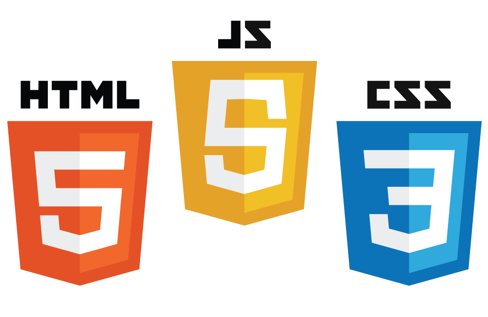

<div id="aboutMeStyle">
  <div class="container-fluid bg-2 text-center">

    <h3 class="margin-bottom">What Am I?</h3>


    <p class="margin-bottom slideanim">Me llamo Rubén Moreno y soy un <strong>desarrollador front-end de
      Zaragoza, España</strong>. Soy graduado en ingeniería informática en la Universidad de
      Zaragoza en la promoción 2013-2017 en la especialidad de Ingeniería del Software. Me
      encanta el <strong>desarrollo web, la arquitectura del software y la gestión de proyectos y
        equipos </strong>siguiendo metodologías ágiles.</p>


    <div class="row margin-bottom">
      <div class="col-sm-4 slideanim">
        <div class="col-xs-12">
          
        </div>
        <div class="col-xs-12 text-justify">
          <p>Mi lenguaje favorito de programación es <strong>Javascript</strong>, y el framework de
            desarrollo de aplicaciones de front-end que me encanta es <strong>AngularJS 1</strong>.
            Siempre me gusta ir aprendiendo tecnologías nuevas y experimentar con ellas, React
            y AngularJS 2 son mis próximos objetivos.</p>
        </div>
      </div>

      <div class="col-sm-4 slideanim">
        <div class="col-xs-12">
          
        </div>
        <div class="col-xs-12 text-justify">
          <p>Como desarrollador full Stack me encanta el <strong>Stack MEAN</strong> y
            cuando tengo que defenderme en el back-end también uso <strong>java con
              SpringBoot</strong>, aunque siempre me ha llamado la atención Scala. También me
            gusta desarrollar aplicaciones híbridas con tecnologías como el <strong>framework
              Ionic 2</strong>.</p>
        </div>
      </div>

      <div class="col-sm-4 slideanim">
        <div class="col-xs-12">
          
        </div>
        <div class="col-xs-12 text-justify">
          <p>Estoy bastante acostumbrado a realizar los <strong>diseños arquitecturales de los
            sistemas</strong> y tener que discutir y compartir las distintas visiones de los mismos
            con otros compañeros, además de <strong>dirigir equipos pequeños de 3-5</strong> personas
            normalmente usando la metodología ágil SCRUM.</p>
        </div>
      </div>
    </div>


    <p class="slideanim">Además de desarrollar software también me gusta hacer otras cosas. Me
      encanta el <strong>deporte,</strong> suelo tener siempre una rutina de ejercicios y salir
      en  bici con el buen tiempo. La <strong>música</strong> me encanta, siempre que puedo estoy
      escuchándola, me sirve mucho para concentrarme, y de vez en cuando también me gusta tocar
      el piano. <strong>Viajar y sobretodo estar en naturaleza</strong> es otra de las cosas que
      tengo que hacer con frecuencia y no pueden faltar en mi vida. También disfruto mucho
      <strong>jugando videojuegos</strong> y me gustaría tener tiempo para poder aprender a
      desarrollar alguno. Por último también me gusta desarrollar software con mis amigos a nivel
      personal cuando se nos ocurren algunas ideas, o participar con ellos mínimo una vez al año
      en algún hackatón importante.</p>
  </div>
</div>
